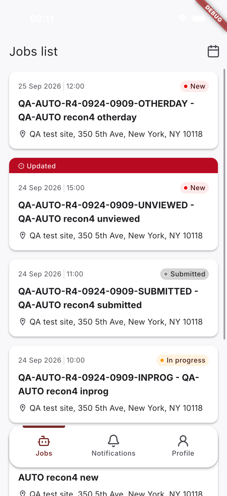
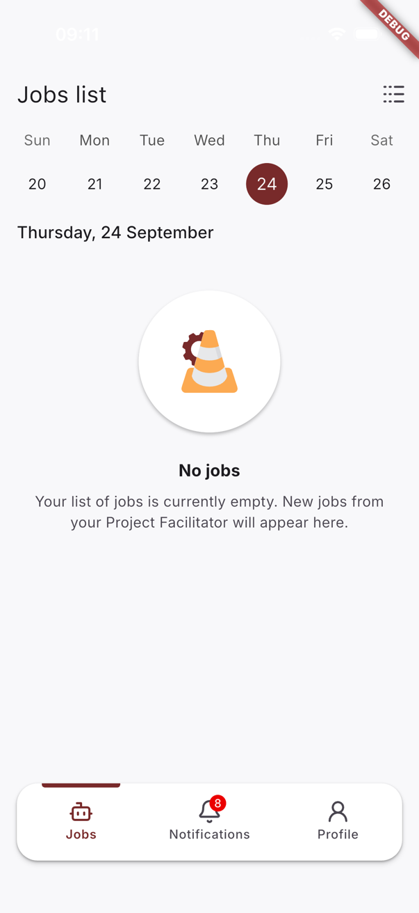
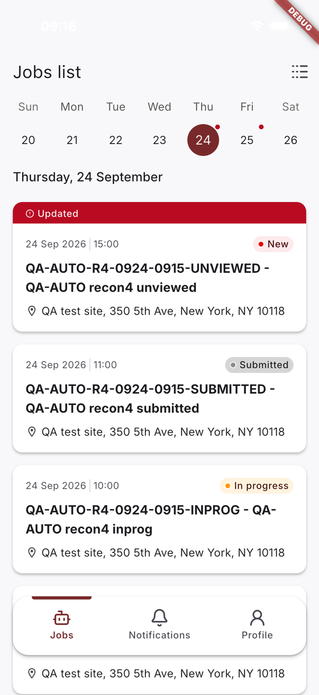

Defect report · 03 · Order list
Process: prompts/08-file-bug.md. Filed locally 2026-09-24 on the owner's go (mykola.zhuchenko, answer 3 to the recon 4 questions: «так заведи»). Tracker: not configured, nothing sent anywhere.
Jobs assigned while the app is open appear in the Jobs list after a pull-to-refresh, but the weekly calendar still shows "No jobs" for their dates until the calendar itself is pulled to refresh or the app is restarted.
lib/features/jobs/presentation/bloc/jobs/jobs_bloc.dart: JobsListRefreshed fetches the list only;
the calendar week is fetched on screen start, on its own pull-to-refresh, on a week change and on reconnect).| Field | Value |
|---|---|
| Platform | Flutter on iOS |
| Platforms checked | iOS ✓ reproduced · Android ✓ reproduced (Pixel 7 emulator · Android 16, recon A1 2026-09-29; added on the owner's go) |
| OS version | iOS 26.5 |
| Device | iPhone 17 |
| Form factor | phone |
| Device type | simulator |
| App version | [DEV] CT Mobile 1.1.1 (178), development @ 85a84f3 |
| Build type | debug (flavor development, CLIENT_BUILD=true) |
| Install method | sideload (simulator build) |
| Network | Wi-Fi (host network), DEV API |
| Locale | en |
| Orientation | portrait |
| User role | Field Technician (signed in) |
| Feature flags | — |
| Permissions state | notifications=granted |
POST /job with the technician's userId, statuses New / In progress / Submitted).After step 1 the list shows the new jobs. In the calendar, today and the other day both show "No jobs". Only a
pull-to-refresh inside the calendar (or a restart) brings the jobs into the calendar.
//   
The calendar shows every job assigned to the technician on its scheduled date whenever the list shows it — refreshing the jobs refreshes both views.
QA-AUTO-RA-* created after login): the Jobs list showed all 5 after
its pull-to-refresh, the calendar showed "No jobs" for today; the calendar's own pull-to-refresh brought all 5.
Automated: TC-ORDL-015 red in module 01+03 Android runs 5 and 6 (2026-09-29/30) — a job created after the Jobs screen
loaded is in the refreshed list but not in the calendar for its date (the jobs loaded at the screen start are).QA-AUTO-R4-*).qa/shared/recon-dumps/ios-2026-09-24/recon4_calendar_today.xml, recon4b_calendar_after_list_refresh.xml,
recon4b_calendar_after_calendar_refresh.xml.qa/shared/recon-dumps/android-2026-09-29/jobs_list.xml, jobs_calendar.xml, jobs_calendar_after_refresh.xml;
recon report qa/shared/recon-2026-09-29-android.md.
4 — run 6: the calendar for today without the job created after the screen loaded (16:00; the day's cards run from
15:00 down). Test jobs only.Pull down to refresh inside the calendar view, or close and reopen the app.
CHK-ORDL-049, CHK-ORDL-050 (../order-list-checklist.md) — no item states
the list / calendar consistency itself (CHK-ORDL-070 was added for it, 2026-09-24).TC-ORDL-015 — the regression check, red until the fix; TC-ORDL-007, TC-ORDL-010
(../order-list-test-cases.md) refresh the calendar on purpose so their own checks are
not hidden by this bug.D-ORDL-11 in ../order-list-questions.md.When this bug is verified fixed: re-verify with the steps above on the fixed build, add the invariant, and keep the regression check CHK-ORDL-070 / TC-ORDL-015.